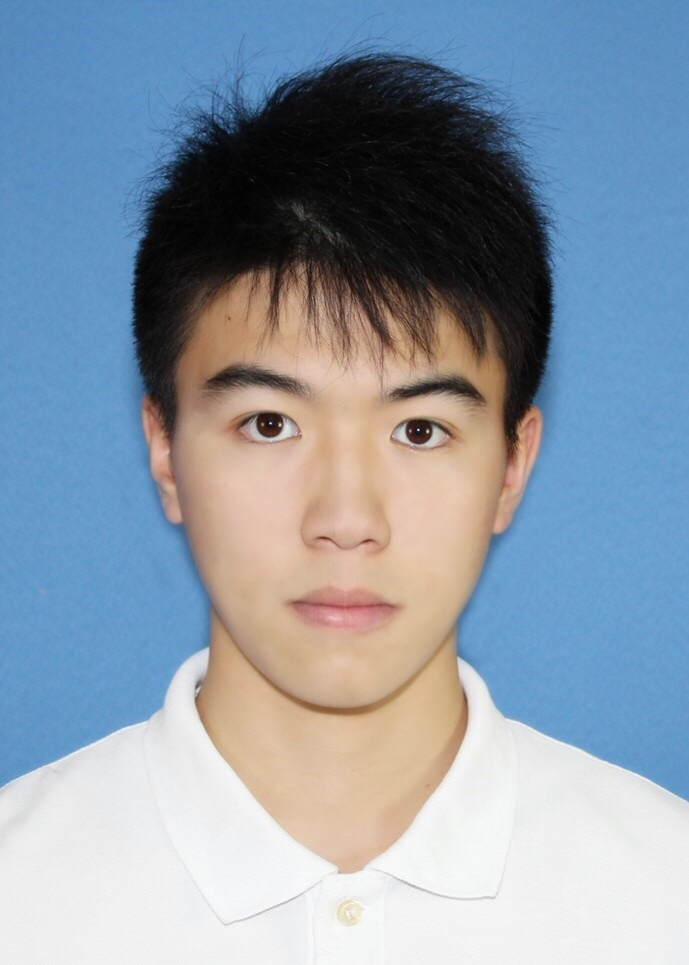

Yejun Tang
Summary
I am a hardworking and dedicated individual with experience in game develop and web develop.
Education
Bachelor of Science, Computer Science - RWTH Aachen University (2019-2023 )
T-Kurs - Studienkolleg Paderborn (2019)
Work Experience
Web Developer Assistant - FindSelf Inc.
November 2022 - Present
Maintained webpages using Django framework for backend development
Experienced in front-end web development using React
Skills
Programming Language: Python, C, Java
Microsoft Office Suite
Game Develop using Unity and C#
Web Develop using HTML, css and Javascript
Others
My hobbies
Contact me